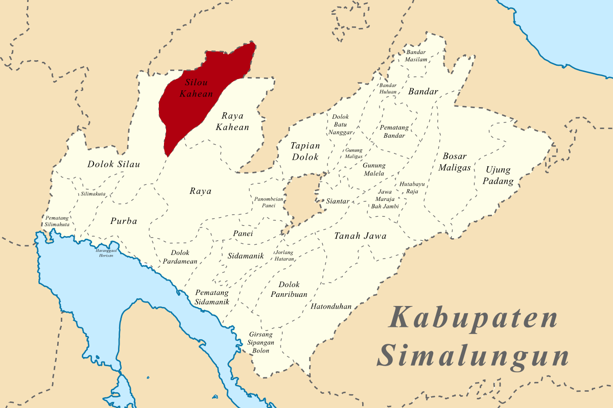

Desa Dolok Marawa |
||
|  |
| Negara | : | Indonesia |
| Provinsi | : | Sumatera Utara |
| Kabupaten | : | Simalungun |
| Kecamatan | : | Silau Kahean |
| Lokasi | : | 02°36’-03°18’ Lintang Utara dan 98°32’-99°35’ Bujur Timur |
| Kode Pos | : | 21157 |
Bujur Timur (Badan Pusat Statistik Simalungun, 2014). Salah satu sumber air panas yang terdapat di Kabupaten Simalungun yakni Kawah Putih Tinggi Raja tepatnya berada di Kecamatan Silau Kahean, Desa Dolok Marawa. Sumber panas bumi berada pada jarak 500 meter dari rumah penduduk. Desa Dolok Marawa merupakan daerah yang berada di daerah aliran sumber panas bumi. Hal ini dapat dilihat pada peta geologi yang diperoleh dari Departemen Pertambangan dan Energi (1982) yang menyatakan bahwa Dolok Marawa merupakan daerah yang terdiri dari batuan gunung api yang menjadi salah satu faktor munculnya 12 manifestasi panas bumi.
Berdasarkan pengakuan dari masyarakat setempat, air panas yang muncul umumnya masih dimanfaatkan hanya sebagai objek wisata saja sedangkan untuk prospek terkait dengan pengembangan sumber energi panas bumi belum dikaji secara matang. Dengan melihat potensi yang ada pada daerah panas bumi tersebut, maka perlu dikembangkan agar lebih bermanfaat.